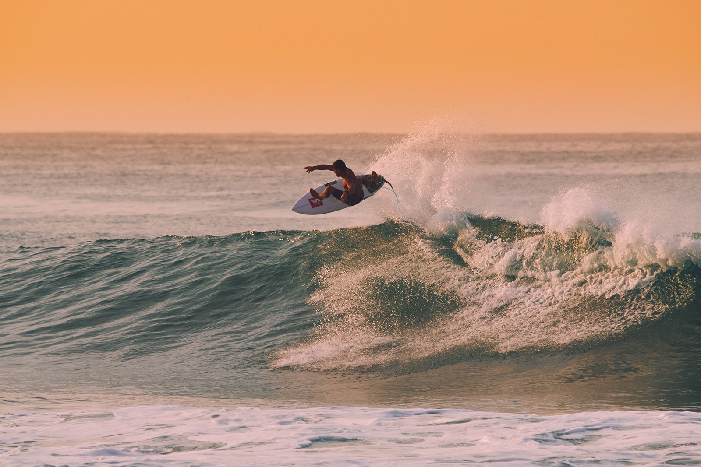
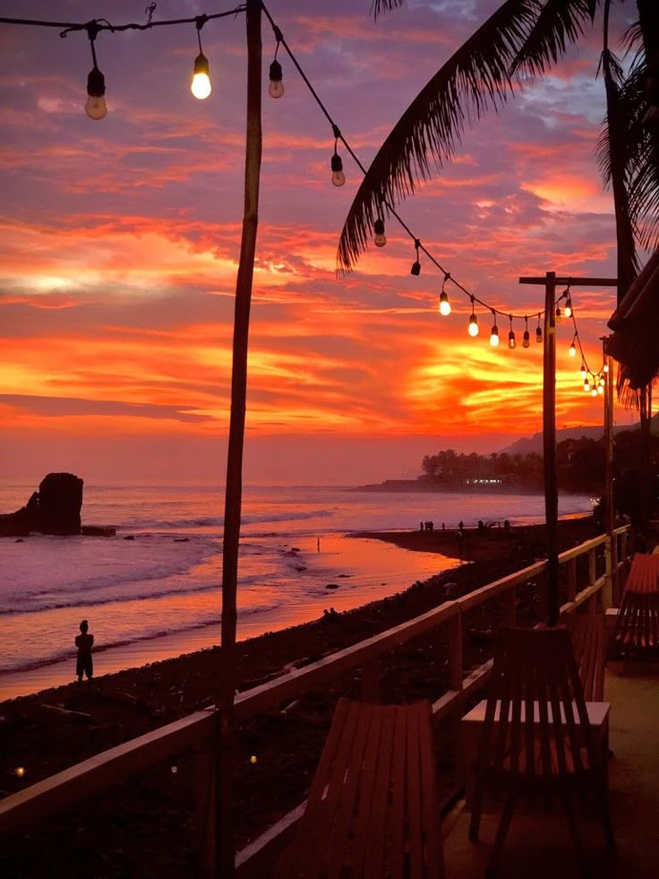
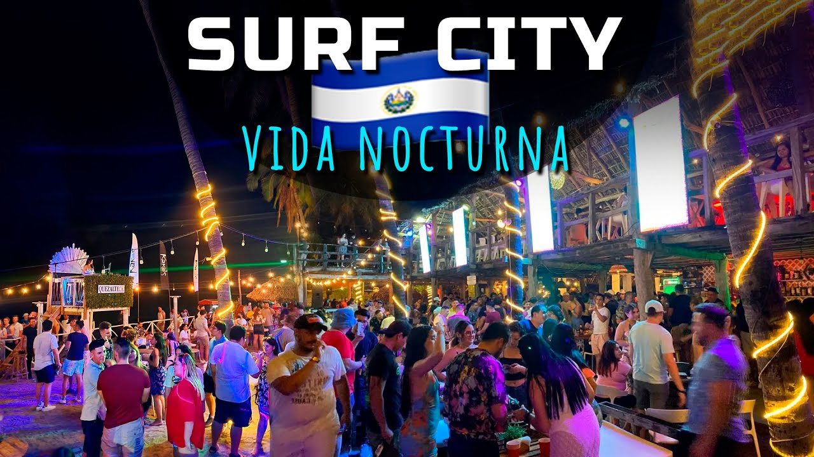
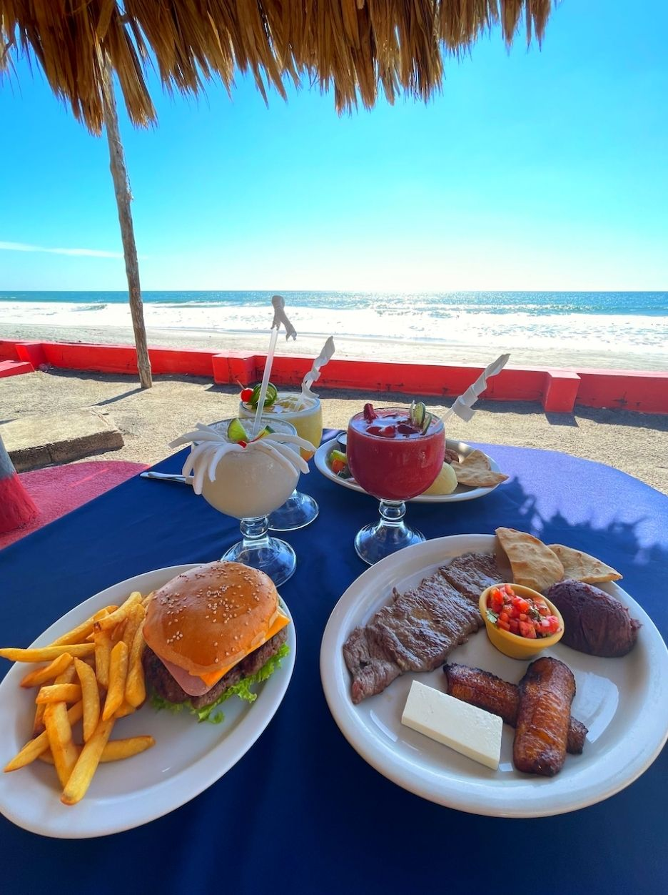
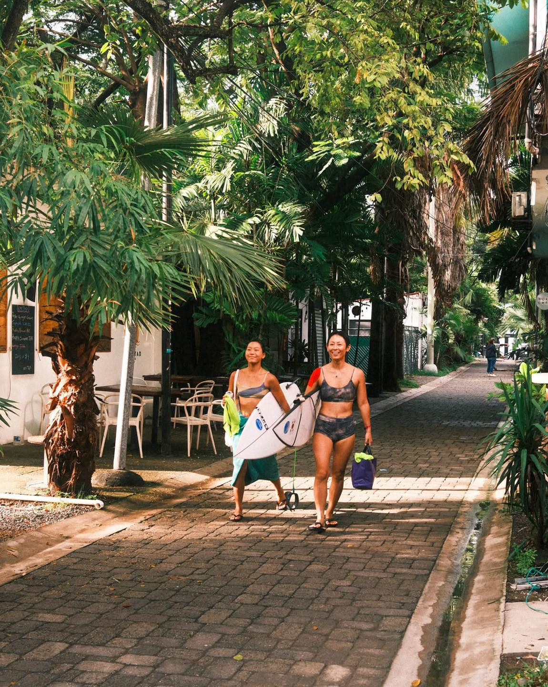

Descubre algunas de las experiencias más popularesque hacen de El Tunco uno de los destinos turísticosmás visitados de El Salvador.

Disfruta las famosas olas de El Tunco y viveuna experiencia llena de adrenalina.

Observa impresionantes atardeceres frente al mar.

Música, restaurantes y diversión cerca de la playa.

Música, restaurantes y diversión cerca de la playa.

Música, restaurantes y diversión cerca de la playa.
Música, restaurantes y diversión cerca de la playa.